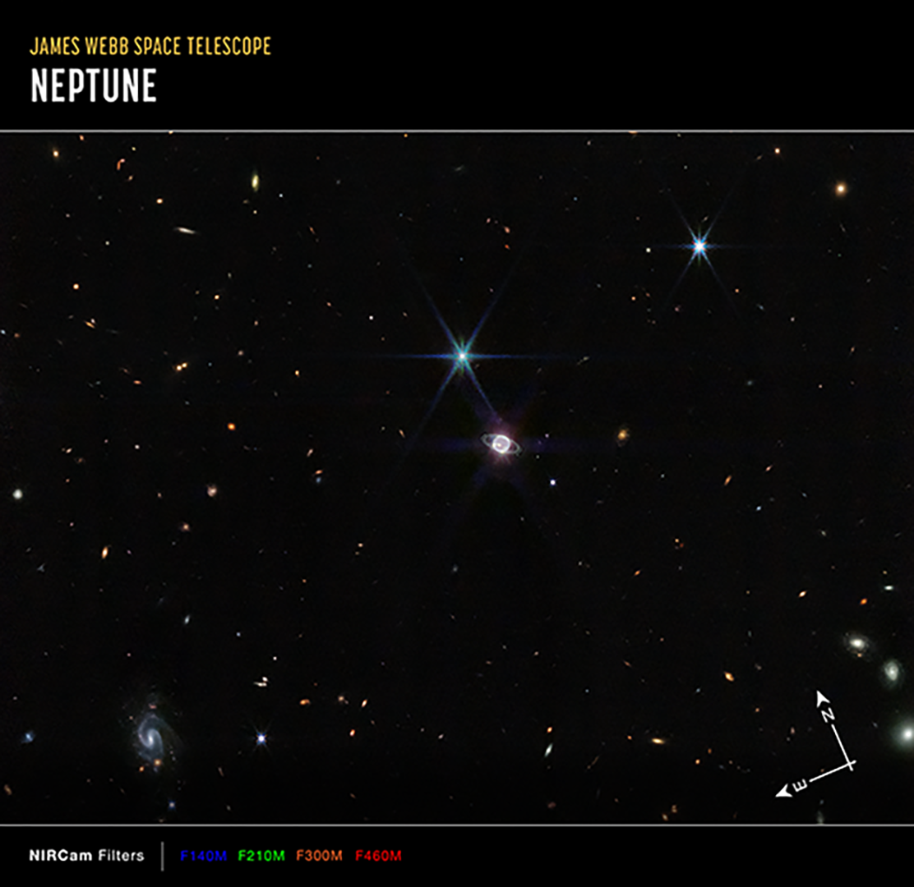

Neptune
About This Image:
Caption:
This image of Neptune and its rings and moons, captured by Webb’s Near-Infrared Camera (NIRCam), shows compass arrows and a color key for reference.
The north and east compass arrows show the orientation of the image on the sky. Note that the relationship between north and east on the sky (as seen from below) is flipped relative to direction arrows on a map of the ground (as seen from above).
This image shows invisible near-infrared wavelengths of light that have been translated into visible-light colors. The color key shows which NIRCam filters were used when collecting the light. The color of each filter name is the visible light color used to represent the infrared light that passes through that filter.
Credits:
IMAGE: NASA, ESA, CSA, STScI
IMAGE PROCESSING: Joseph DePasquale (STScI), Naomi Rowe-Gurney (NASA-GSFC)
Link to Content Use Policy: https://webbtelescope.org/copyright
Release DateSeptember 21, 2022 8:00AM (EDT)